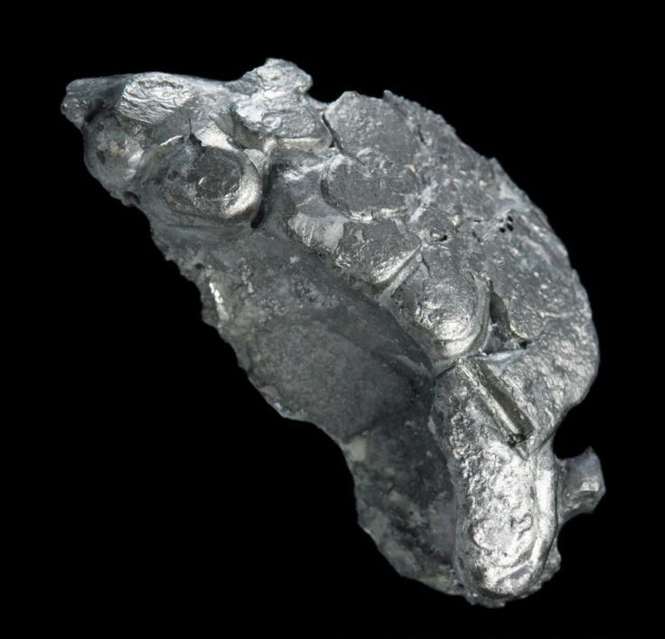

Менделевий

Менделе́вий (химический символ — Md, от лат. Mendelevium) — химический элемент 3-й группы (по устаревшей классификации — побочной подгруппы третьей группы, IIIB) седьмого периода периодической системы химических элементов Д. И. Менделеева, с атомным номером 101. Относится к семейству актиноидов.
Впервые получен в 1955 г. американскими физиками А. Гиорсо, Г. Сиборгом и другими путём бомбардировки нуклида эйнштейния 253Es α-частицами; назван в честь Д. И. Менделеева.
Бомбардировка в циклотроне атомов эйнштейния ионами гелия (альфа-частицами).На данный момент исследования не выявили возможность практического применения менделевия. Также из-за короткого периода полураспада биологическая роль менделевия не выяснена.